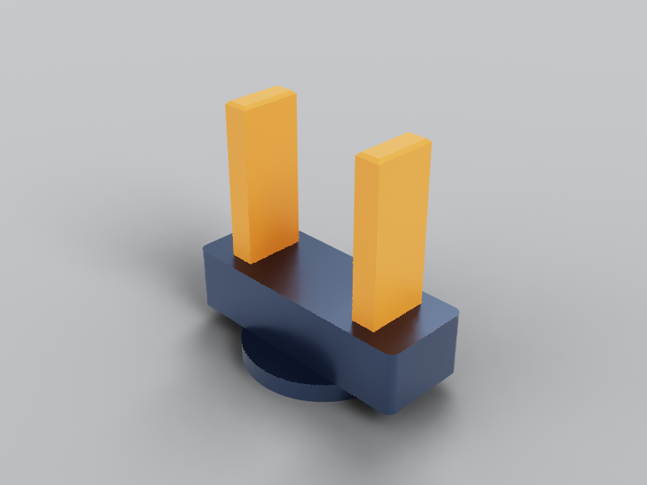

08-gripper
A parallel gripper: a palm block on a mounting flange, two fingers on prismatic joints sliding toward each other along X, coupled so one value drives both. Poses open and closed; finger limits from `cad model ranges`. Export: cad model export "$ID" out/gripper.urdf

Source
Run it with cad run examples/dogfood/08-gripper.ts.
// A parallel gripper: a palm block on a mounting flange, two fingers on prismatic joints sliding
// toward each other along X, coupled so one value drives both. Poses open and closed; finger
// limits from `cad model ranges`. Export: cad model export "$ID" out/gripper.urdf
import { assembly, box, couple, cylinder, model, param, prismatic } from "@cad/sdk";
export const gripper = model("gripper", () => {
const stroke = param("stroke", 20, { min: 5, max: 40, unit: "mm", description: "each finger's travel" });
const palm = box(80, 30, 20, { align: ["center", "center", "min"] })
.fuse(cylinder(25, 6, { align: ["center", "center", "max"] })) // flange under the palm
.fillet("|Z", 3)
.label("palm", { color: "#4a5568", material: "aluminum" });
// fingers built open: their inner faces stroke + 1 apart from the centre
const finger = (side: 1 | -1) =>
box(8, 20, 50, { align: [side > 0 ? "min" : "max", "center", "min"] })
.translate(side * (stroke + 1), 0, 20)
.chamfer(">Z", 1)
.label(side > 0 ? "finger_r" : "finger_l", { color: "#ed8936", material: "pom" });
const right = finger(1), left = finger(-1);
return assembly("gripper", [palm, left, right], {
joints: [
prismatic("left", { parent: palm, child: left, axis: "X", limits: [0, stroke], effort: 40, velocity: 50 }),
prismatic("right", { parent: palm, child: right, axis: "-X", limits: [0, stroke], effort: 40, velocity: 50 }),
],
couplings: [couple("left", "right", 1)],
poses: { open: { left: 0 }, closed: { left: stroke } },
});
});
if (import.meta.main) await gripper();